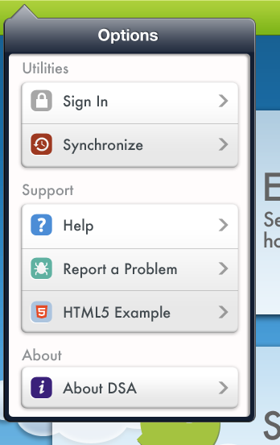
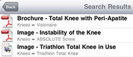

|  | Settings Menu, at the top right corner of the screen, allows you to |
|
 |
The Search window (to the right of Settings) enables you to look for content that is stored on the device. Search results also include a hierarchical view of the product family for the entered search term. |